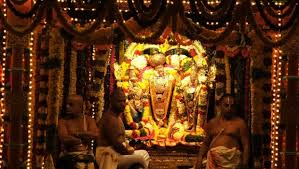

Balaji Temple
 |
 |
 |
Among the most popular global pilgrimage places, Tirupati, in Andhra Pradesh, is a stopover for those seeking spirituality and sanctity. Situated at the foot of Tirumala Hills, this lively pilgrim place attracts devotees all year round. Tirupati Balaji or the Lord Venkatesha Temple is the main attraction here. Said to be one of the richest temples in the country, it sees an estimated footfall of 60,000 every day. Devotees donate their hair and various riches in the temple in order to please the god.
Though the temple is an overwhelming presence in the town, Tirupati also houses one of the oldest and the rarest geological formations in the world - a natural stone arch. Lying in close proximity to the temple, the stone arch or Sila Thoranam (garland or festoon of rocks) has been categorised as Precambrian and is believed to be 1,500 million years old! Tirupati has been ruled by various kingdoms such as the Pallavas around the 9th century, Cholas in the 10th century, and Vijayanagara between the 14th and 15th centuries. It is believed that the rituals in this temple town were formulated by Shri Ramanujacharya, a Hindu theologian and philosopher, in the 11th century.
The Tirumala Hills, which is a group of seven hills namely, Seshadri, Vedadri, Garudadri, Anjanadri, Vrishabadri, Narayanadri and Venkatadri, add to the beauty of the town. When viewed from the top, these hills appear to be in the form of a coiled serpent. It is believed that they were once the resting place of Lord Vishnu.
One of the richest temples in the country and a major tourist spot in South India, Lord Venkatesha Temple is popularly recognised as Tirupati Balaji. The temple is dedicated to Lord Venkateshwara, an incarnation of Lord Vishnu and its sacred shrine has been mentioned in holy scriptures such as the Garuda Purana, Brahma Purana and many others. The temple is situated at a height of 853 m above sea level and is positioned on Venkata Hill, which is one of the saptagiri (seven hills) of Tirumala Hills. These seven peaks are said to be the hoods of sheshnag (serpent god). The awe-inspiring sacred shrine of the temple is covered in pure gold and is a sight to behold.
The temple is flooded with devotees all year round and the average time taken for a devotee to reach the main idol can range from three to five hours. However, one can book online tickets to avoid the long queues and visit the main shrine devoid of hassles. The temple follows the rituals prescribed by Saint Ramanujacharya in the 11th century. Prayers start at 3 am and end with Ekanta Seva (a ritual in which a priest sings lullabies to put the lord to sleep) at 1 am. A popular practice in the temple is the donation of hair and various riches in order to please the god. The architecture of the temple building is spectacular and reflects the Dravidian style. Three entrances lead to the sanctum sanctorum - the first is called Mahadwaram. A gopuram (gateway), measuring 50 ft, is placed in front of the entrance. There are two circumambulation (parikrama) paths. While the first one comprises many-pillared halls and flagstaffs, the second has many sub-shrines and other edifices along with the main kitchen. The main shrine houses a gold-plated tower that is called Ananda Nilayam, and a temple inside the tower houses the main deity. Devotees also visit a holy pond located on the northern side of the temple.